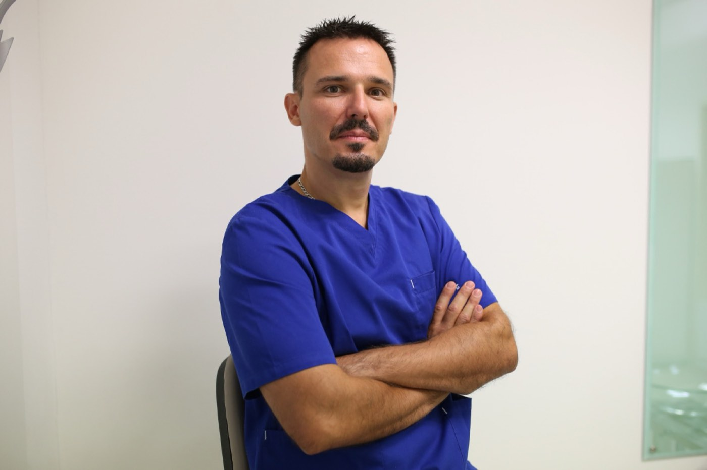

univ. mag. med. dent. · specijalist parodontologije
Josip Prpić, dr. med. dent.
Diplomirao je na Stomatološkom fakultetu u Zagrebu 2003. godine, a 2004. pokreće privatnu praksu. Redovito sudjeluje na domaćim i stranim seminarima i kongresima, osobito iz parodontologije, implantologije i protetike na zubima i implantatima.
Zbog stručnosti, ljubaznosti i strpljenja pacijenti mu na portalu najdoktor.com dodjeljuju „Priznanje za izvrsnost”.
Parni datumi 13:00–20:30Neparni 7:00–14:30Petak 7:00–14:30